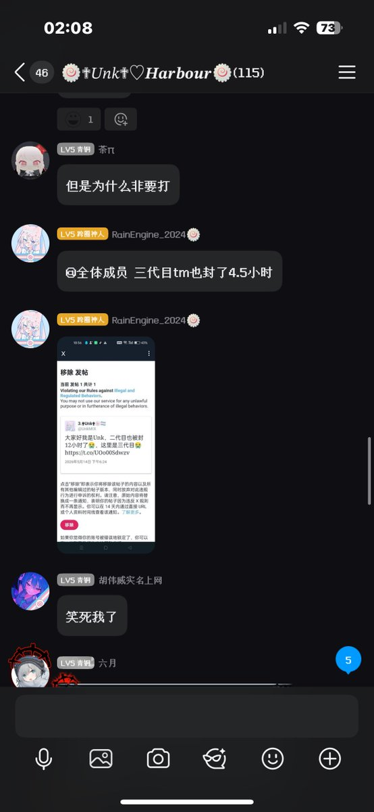
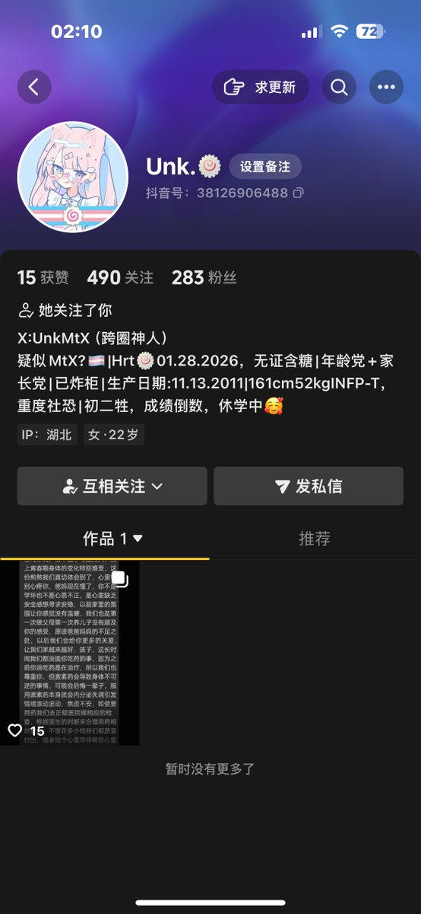

Echo37
@ax09s84751
我真的 不懂 为什么 Unk 她要搞抽象，Unk 她是我最早认识的互关
之一，明明刚来x 时还是挺正常的.... 之后却跟风od，割手，以至于现在都开始偷东西了.. 不知道是网络还是她本身就是这样的... 我就是觉得她不算坏的吧?..


櫻川由奈🏳️⚧️Sakura🍥
@Xiaoyi_0324
看笑了
Unk三代目已被封
貌似像唐毓文 n55那样 转生就秒私
目前已经转至墙内的社交媒体
都快更成连续剧了 笑死我了
✝️昇天✝️ https://t.co/mpeUtTAoqU